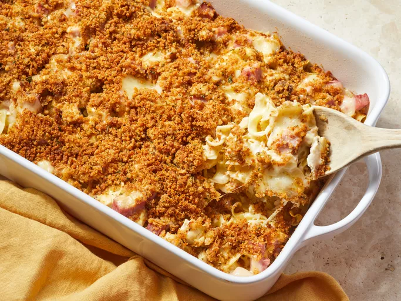

Casserole

Description
This chicken Cordon Bleu casserole has all the creamy and wonderful flavor of the traditional dish with a little of the fat and hassle removed.
Ingredients
- Noodles
- Chicken and ham
- Cheese
- Soup
- Milk and sour cream
- Butter
- Bread crumbs
Steps
- Boil and drain the noodles, then transfer to a prepared casserole dish.
- Top the noodles with chicken, ham, and Swiss cheese.
- Combine the soup, milk, and sour cream in a bowl, then spoon over the noodle mixture.
- Make the topping and sprinkle it over the casserole.
- Bake until the casserole is bubbling and lightly browned.